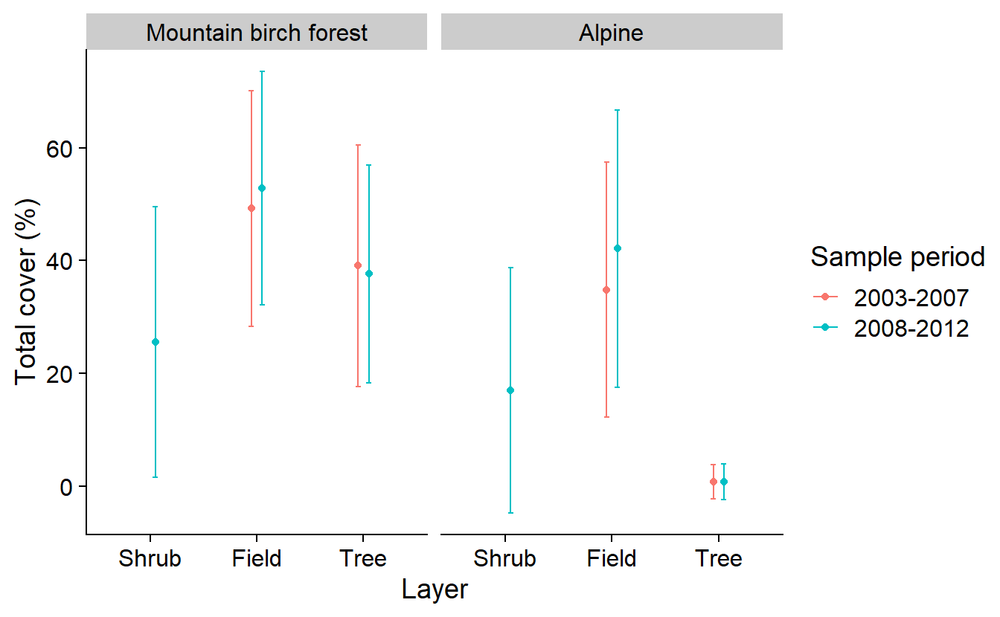

Chapter 13 3.1.3 Kombinera tabellerna till en gemensam tabell
klassVegetation <- klasser |>
filter(lan != "Utlandet",
fjalltyp %in% c("Fjällbjörkskog", "Område ovan SKOGSgränsen"),
ar <= 2012) |>
left_join(vegetation, by = c("ar","rutaNummer", "provytaNummer","delytaNummer")) |>
mutate(survPer = ifelse(ar < 2007, "2003-2007", "2008-2012"))
# range(klassVegetation$tradTackningTotal, na.rm = TRUE)
# range(klassVegetation$ar, na.rm = TRUE)
klassVegetationPL <- klassVegetation |>
dplyr::select(fjalltyp, survPer, tradTackningTotal, buskTackningTotal, faltskiktTackningTotal) |>
pivot_longer(!c(fjalltyp, survPer), names_to = "layer", values_to = "cover")
kvSumm <- klassVegetationPL |>
group_by(fjalltyp, survPer, layer) |>
summarise_at(.vars = vars(cover),
.funs = list(mean = ~mean(., na.rm = TRUE),
sd = ~sd(., na.rm = TRUE)),
.grups = "drop") |>
mutate_at(vars(fjalltyp, survPer, layer), list(factor)) |>
as.data.frame()ggplot(kvSumm, aes(x = layer, y = mean, color = survPer)) +
geom_point(position = position_dodge(0.2)) +
geom_errorbar(aes(ymin = mean - sd,
ymax = mean + sd),
width = .1,
position = position_dodge(0.2)) +
facet_wrap(vars(fjalltyp), labeller = as_labeller(c("Fjällbjörkskog" = "Mountain birch forest",
"Område ovan SKOGSgränsen" = "Alpine"))) +
labs(y = "Total cover (%)", x = "Layer", color = "Sample period") +
scale_x_discrete(labels = c("Shrub", "Field", "Tree"))